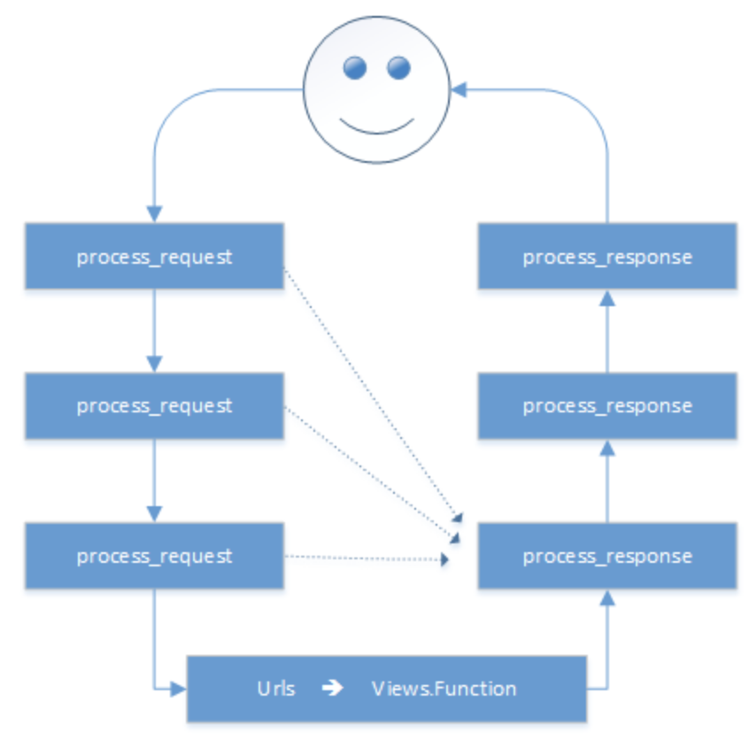

一个简单的web框架
1 | import socket |
Django
基础
创建程序
1 | # 创建django程序 |
程序目录
1 | sitename |
模板
1 | # 元素 |
模态对话框Ajax
模态对话框使用form表单提交会刷新页面，为了不刷新，可以使用ajax1
2
3
4
5
6
7
8
9
10
11
12
13
14
15
16
17
18
19
20
21<script src="/static/jquery-3.2.0.js/" type="text/javascript"></script>
<script>
function ajax_add_teacher(){
$.ajax({
url:'/modal_add_teacher/',
type:'POST',
data:{'tname':$('#tname').val()},
dataType:"JSON", //将data作为json字符串解析为json对象
traditional:true, //如果数据中有list或dict
success: function (data) {
console.log(data);
if (data == 'ok') {
location.href = '/teachers'; //页面跳转
location.reload(); //对当前页面进行刷新
} else {
$('#errormsg').text(data);
}
}
})
}
</script>
前端json
JSON.parse(字符串) -> 对象
JSON.stringify(对象) -> 字符串
通过点取值。1
2dic = JSON.parse(args)
dic.key
js阻止默认事件发生
1 | <a href="www.baidu.com" onclick="return funca();"></a> |
js绑定事件
1 | <a id="xx"></a> |
bootstrap
常用的样式
样式
添加 <link rel='stylesheet' href='/static/bootstrap.css'></link>
添加属性 class=‘xasdf’
响应式
根据窗口大小，自适应布局
@media关键字
母版
1 | //母版文件 muban.html |
一般css、content、js三个block
fontawesome
常用的图标
cookie
保存在浏览器端的键值对1
2
3
4
5
6
7
8
9
10
11
12
13
14
15obj = redirect("/classes/")
obj.set_cookie("ticket","kjaskldfjaskdf",max_age=10,path="/",domain=None) //生效时间10s 推荐, path表示cookie在哪个路径生效,domain对域名的划分（默认当前域名），
import datetime
cur_time = datetime.datetime.utcnow()
time_delta = datetime.timdelta(seconds=123)
obj.set_cookie("ticket","kjaskldfjaskdf",expires=cur_time+time_delta) //知道目标时间都生效
set_salt_cookie("ticket","kjaskldfjaskdf",salt="asdf")
// 获取
request.get_signed_cookie("ticket",salt="asdf")
request.COOKIE.get("ticket")
数据库
django：路由、视图、母版、ORM()
torando：路由、视图、母版、自由(mysql,SqlAchemy)
flask：路由、视图、母版(第三方)、自由(mysql,SqlAchemy)
路由系统
1 | # path第一个参数为正则表达式模板 |
路由分发
1 | urls.py |
别名反向生成url
1 | # 1 |
CBV和FBV
CBV
一个URL对应一个类1
2
3
4
5
6
7
8
9
10
11
12
13
14
15
16
17
18
19
20# urls.py
path(r'^login.html$', views.Login.as_view()),
# views.py
from django.views import View
class Login(View): # 继承View类作为父类
# #重写父类方法，该方法可作为装饰器功能
def dispatch(self, request, *args, **kwargs): # 自定制 dispatch方法，除了可以利用父类中原dispatch方法，还可以自定制处理逻辑
print('before')
obj = super(Login,self).dispatch(request, *args, **kwargs) # 传入Login对象作为参数，调用父类中的方法
print('after')
return obj
def get(self,request): # 请求为get请求时，自动调用该方法
# return HttpResponse('Login.get')
return render(request,'login.html')
def post(self,request): # 请求是POST请求时，自动调用该方法
print(request.POST.get('user'))
return HttpResponse('Login.post')
ORM操作
配置
1 | __init__.py文件 |
创建数据库
1 | # models |
修改表/删除表
1 | # models |
创建外键关联
1 | # models |
单表操作
1 | # 增 |
连表操作
1 | # 创建表 |
排序
1 | user_list = models.UserInfo.objects.all().order_by('-id','name') |
分组
1 | # group by |
其他操作
F
1
2from django.db.models import F
models.UserInfo.objects.all().update(age=F("age")+1) # F()用来取对象中某列值Q(构造复杂的查询条件)
1
2
3
4
5# 对象方式(不推荐)
from django.db.models import Q
models.UserInfo.objects.filter(Q(id__gt=1))
models.UserInfo.objects.filter(Q(id=8) | Q(id=2)) # or
models.UserInfo.objects.filter(Q(id=8) & Q(id=2)) # and方法方式
1
2
3
4
5
6
7
8
9
10
11
12
13
14
15
16
17
18
19
20
21
22from django.db.models import Q
q1 = Q()
q1.connector = 'OR'
q1.children.append(('id__gt', 1))
q1.children.append(('id', 10))
# 通过OR将3个条件进行连接组装
q2 = Q()
q2.connector = 'OR'
q2.children.append(('c1', 1))
q2.children.append(('c1', 10))
q3 = Q()
q3.connector = 'AND' #通过AND将2个条件进行连接组装
q3.children.append(('id', 1))
q3.children.append(('id', 2))
q1.add(q3,'OR') #还可将q3嵌入到q1条件组中
# 将q1和q2条件组通过AND汇总到一起，q1和q2内部分别用or组合条件
con = Q()
con.add(q1, 'AND')
con.add(q2, 'AND')
1 | condition_dict = { #用户将选择的条件组合成字典格式 |
extra(添加额外的自定义sql语句)
1 | models.UserInfo.objects.extra(self, select=None, where=None, params=None, tables=None, order_by=None, select_params=None) |
原生sql语句
1 | from django.db import connection, connections |
其他操作
1 | ################################################################## |
多对多操作
1 | # 手动创建第三张关联表（推荐，手动更灵活） |
连表操作（多对多自关联）
原理：等同于复制出一张新表1
2
3
4
5
6
7
8
9
10
11
12
13
14
15
16
17
18
19
20
21
22
23
24
25
26class UserInfo(models.Model):
nickname = models.CharField(max_length=32)
username = models.CharField(max_length=32)
password = models.CharField(max_length=64)
gender_choices = (
(1,'男'),
(2,'女'),
)
gender = models.IntegerField(choices=gender_choices)
m = models.ManyToManyField('UserInfo') # 多对多自关联字段，自动生成第二张表，字段分别为from_userinfo_id和to_userinfo_id;
# 表中的m属性不会在userinfo表中生成m字段
def test(request):
# 查男生（通过m字段查询属于正向操作）
xz = models.UserInfo.objects.filter(id=1).first() #id为1代表男生的1条数据
u = xz.m.all()
for row in u:
print(row.nickname)
# 查女生(通过表名称_set查询属于反向操作)
xz = models.UserInfo.objects.filter(id=4).first() #id为4代表女生的1条数据
v = xz.userinfo_set.all()
for row in v:
print(row.nickname)
return HttpResponse('...')
外键自关联（常用于评论表功能）
等同于复制出一张新表，用原表中的外键作连表操作1
2
3
4
5
6
7
8
9
10
11
12
13
14
15
16
17
18
19
20
21
22
23
24
25
26
27
28
29class Comment(models.Model):
"""
评论表
"""
news_id = models.IntegerField() # 新闻ID
content = models.CharField(max_length=32) # 评论内容
user = models.CharField(max_length=32) # 评论者
reply = models.ForeignKey('Comment',null=True,blank=True,related_name='xxxx') #related_name表示反向查询时，代替 表名_set 和 表名__字段名
"""
新闻ID reply_id
1 1 别比比 root null
2 1 就比比 root null
3 1 瞎比比 shaowei null
4 2 写的正好 root null
5 1 拉倒吧 由清滨 2
6 1 拉倒吧1 xxxxx 2
7 1 拉倒吧2 xxxxx 5
"""
"""
新闻1
别比比
就比比
- 拉倒吧
- 拉倒吧2
- 拉倒吧1
瞎比比
新闻2：
写的正好
"""
分页
分组获取数据UserGroup.objects.all()[10:20]
内置分页
1 | from django.core.paginator import Paginator,Page,PageNotAnInteger,EmptyPage |
1 | <h1>用户列表</h1> |
自定义分页
1 | # views.py |
1 | <h1>用户列表</h1> |
XSS攻击(跨站脚本攻击)
页面script代码攻击(如评论中的scrpt代码攻击)
item中如果有script代码会自动执行1
2
3
4<h1>评论</h1>
{% for item in msg %}
<div>{{ item|safe}}</div> #需要给响应的值添加safe
{% endfor %}
CSRF(跨站请求伪装攻击)
方法11
2
3
4
5
6<form method="POST" action="/csrf1.html">
{% csrf_token %} # 需添加服务器发送的csrf随机字符串，才能访问成功
<input id="user" type="text" name="user" />
<input type="submit" value="提交"/>
<a onclick="submitForm();">Ajax提交</a>
</form>
方法21
2
3
4
5
6
7
8
9
10
11
12
13
14
15<script>
function submitForm(){
var token = $.cookie('csrftoken'); # 获得浏览器里cookies中的csrf随机字符串
var user = $('#user').val();
$.ajax({
url: '/csrf1.html',
type: 'POST',
headers:{'X-CSRFToken': token}, # 将数据添加到请求头中，让Django去取，硬性规定
data: { "user":user},
success:function(arg){
console.log(arg);
}
})
}
</script>
simple_tag和filter
1 | {{ name|upper }} # upper表示内置函数,将所有字母变大写 |
自定义函数1
2
3
4
5
6
7
8
9
10
11
12
13
14
15
16
17
18
19
20
21
22
23
24
25
26
27
28
29
30
31
32
33
34
35
36# 步骤1 创建templatetags文件夹，再创建xx.py模块
from django import template
register = template.Library() # 规定写法，不能修改
def my_upper(value,arg):
return value + arg
def my_bool(value):
return False
def my_lower(value,a1,a2,a3):
return value + a1 + a2 + a3
# 2.views
def test(request):
return render(request,'test.html',{'name':'aaaaAA'})
# 3. html
# {% load xx %}{#导入加载xx模块#}
# <h2>filter</h2>
# {{ name|my_upper:"666" }} # 最多支持2个参数
# {{ name|upper }}
# {% if name|my_bool %}
# <h3>真</h3>
# {% else %}
# <h3>假</h3>
# {% endif %}
# <h2>tag</h2>
# {% my_lower "ALEX" "x" "SB" "V" %}
# 4. setting注册程序块
include小组件
1 | // pub.html |
admin
admin
django amdin是django提供的一个后台管理页面，改管理页面提供完善的html和css，使得你在通过Model创建完数据库表之后，就可以对数据进行增删改查，而使用django admin 则需要以下步骤：1
2
3
4
5
6
7
8
9
10
11
12
13
14
15
16
17
18
19
20
21
22
23
24
25
26
27
28
29
30
31
32
33
34
35
36
37
38
39
40
41
42
43
44
45
46
47
48
49
50
51
52
53
54
55
56
57
58
59
60
61
62
63
64
65
66
67
68
69
70
71# 创建后台管理员
# 配置url
# 注册和配置django admin后台管理页面
# 1、创建后台管理员
# python manage.py createsuperuser
# 2、配置后台管理url
# url(r'^admin/', include(admin.site.urls))
# 3、注册和配置django admin 后台管理页面
# a、在admin中执行如下配置
from django.contrib import admin
from app01 import models
admin.site.register(models.UserType)
admin.site.register(models.UserInfo)
admin.site.register(models.UserGroup)
admin.site.register(models.Asset)
# b、设置数据表名称
class UserType(models.Model):
name = models.CharField(max_length=50)
class Meta:
verbose_name = '用户类型'
verbose_name_plural = '用户类型'
# c、打开表之后，设定默认显示，需要在model中作如下配置
class UserType(models.Model):
name = models.CharField(max_length=50)
def __unicode__(self):
return self.name
from django.contrib import admin
from app01 import models
class UserInfoAdmin(admin.ModelAdmin):
list_display = ('username', 'password', 'email')
admin.site.register(models.UserType)
admin.site.register(models.UserInfo,UserInfoAdmin)
admin.site.register(models.UserGroup)
admin.site.register(models.Asset)
# d、为数据表添加搜索功能
from django.contrib import admin
from app01 import models
class UserInfoAdmin(admin.ModelAdmin):
list_display = ('username', 'password', 'email')
search_fields = ('username', 'email')
admin.site.register(models.UserType)
admin.site.register(models.UserInfo,UserInfoAdmin)
admin.site.register(models.UserGroup)
admin.site.register(models.Asset)
# e、添加快速过滤
from django.contrib import admin
from app01 import models
class UserInfoAdmin(admin.ModelAdmin):
list_display = ('username', 'password', 'email')
search_fields = ('username', 'email')
list_filter = ('username', 'email')
admin.site.register(models.UserType)
admin.site.register(models.UserInfo,UserInfoAdmin)
admin.site.register(models.UserGroup)
admin.site.register(models.Asset)
cookie和session
cookie是保存在客户端浏览器上的键值对，
Session是保存在服务端的数据（本质是键值对），用于保持会话
因为单独使用cookies，它会保留用户具体的明文形式（不转化成字符串的敏感信息）发送给浏览器（不安全），所以推荐使用session，
session发送的是随机字符串，不包含用户敏感信息（安全），其中session依赖于cookies,在服务端储存的是{随机字符串：键值对}
1 | def login(request): |
session的方法
1 | def index(request): |
settings1
2
3
4
5
6
7
8
9
10
11
12
13
14
15
16
# SESSION_COOKIE_NAME = "sessionid" # Session的cookie保存在浏览器上时的key，即：sessionid＝随机字符串
# SESSION_COOKIE_PATH = "/" # Session的cookie保存的路径
# SESSION_COOKIE_DOMAIN = None # Session的cookie保存的域名
# SESSION_COOKIE_SECURE = False # 是否Https传输cookie
# SESSION_COOKIE_HTTPONLY = True # 是否Session的cookie只支持http传输
# SESSION_COOKIE_AGE = 1209600 # Session的cookie失效日期（2周）
# SESSION_EXPIRE_AT_BROWSER_CLOSE = False # 是否关闭浏览器使得Session过期
# SESSION_SAVE_EVERY_REQUEST = False（推荐True） # 是否每次请求都保存Session，默认修改之后才保存
SESSION_ENGINE = 'django.contrib.sessions.backends.db' # 数据库（默认）
SESSION_ENGINE = 'django.contrib.sessions.backends.cached_db' #引擎，缓存+数据库，推荐使用
SESSION_ENGINE = 'django.contrib.sessions.backends.cache' # 缓存
SESSION_ENGINE = 'django.contrib.sessions.backends.file' # 文件
SESSION_ENGINE = 'django.contrib.sessions.backends.signed_cookies' # cookie
SESSION_CACHE_ALLAS ='default' # 使用缓存别名
用户登录demo
1 | # model |
1 | # login.html |
中间件

中间件是django路由转发之前或返回response时进行的操作。用于对所有请求或一部分请求做批量处理。1
2
3
4
5
6
7
8
9
10
11
12
13
14class Middle1(MiddleMixin):
def process_request(self,request):
# 一般不要返回值，否则会阻止之后的中间件执行，从最后一个中间件的process_response返回，（旧版本从当前的request返回）
print("asxafs")
def process_response(self,request,response):
# 必须有返回值
print("print")
return response
# process_request(self,request)
# process_view(self, request, callback, callback_args, callback_kwargs)
# process_template_response(self,request,response) # 视图函数中有render才会执行
# process_exception(self, request, exception)
# process_response(self, request, response)
MVC和MTV
文件划分方式
MVC： model(数据库，模型) views(模版) controller(业务处理)
MTV： model(数据库，模型) template(模板) views(业务逻辑)
django ： MTV
Form组件
需要对请求的数据进行验证
一般form提交，如果不满足要求：
- 判断后无法记住上次输出，页面会刷新。
一般Form组件的使用
1 | from django.forms import Form,fields |
1 | <form method="post" action="/login/"> |
Form和Ajax提交验证（Ajax提交不会刷新，上次内容自动保留）
https://www.cnblogs.com/wupeiqi/articles/6144178.html1
2
3
4
5
6
7
8
9
10
11
12
13
14
15
16
17
18
19
20
21
22
23
24
25
26
27
28
29
30
31
32
33
34
35
36
37<h1>用户登录</h1>
<form id="f1" action="/login/" method="POST">
{% csrf_token %}
<p>
<input type="text" name="user" />{{ obj.errors.user.0 }}
</p>
<p>
<input type="password" name="pwd" />{{ obj.errors.pwd.0 }}
</p>
<input type="submit" value="提交" />
<a onclick="submitForm();">提交</a>
</form>
<script src="/static/jquery-1.12.4.js"></script>
<script>
function submitForm(){
$('.c1').remove();
$.ajax({
url: '/ajax_login/',
type: 'POST',
data: $('#f1').serialize(),// 序列化：user=alex&pwd=456&csrftoen=dfdf
dataType:"JSON",
success:function(arg){
console.log(arg);
if(arg.status){
}else{
$.each(arg.msg,function(index,value){ #index为字段名，value为错误值
var tag = document.createElement('span');
tag.innerHTML = value[0];
tag.className = 'c1';
$('#f1').find('input[name="'+ index +'"]').after(tag);
})
}
}
})
}
</script>
1 | class LoginForm(Form): #定义Form组件类，用来验证请求数据 |
Form组件常见字段
1 | class TestForm(Form): |
Form组件之保留上次输入框内容
1 | # 采用Form组件生成的表单组件作为页面标签才能完成保留上次输入框的数据 |
1 | class RegiterForm(Form): |